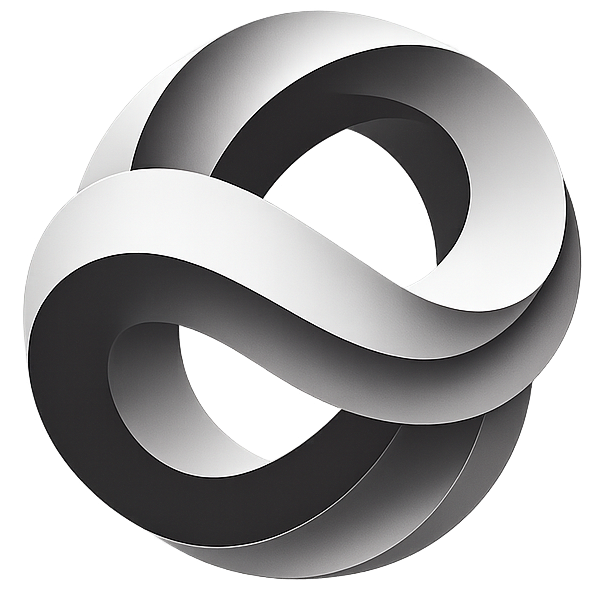

Setup
From box to desk
in about three minutes.
Install the MCP plugin on your AI agent, power the device, join its captive portal, pair from your agent. Live usage flows within ~60 seconds.
Install the MCP plugin on your AI agent.
The tokenmonitor plugin ships through Fractal Manifold's MCP marketplace. Installing it registers the local broker (tokenmonitor-mcp) plus the configure / theme / settings / firmware skills — same surface across every supported CLI.
tokenmonitor_status and report the broker role + request count.
Power the device.
USB-C, 5 V / 1 A. Any wall charger or USB hub will do — the device draws < 4 W peak with the backlight at full.
On first boot, with no Wi-Fi yet stored, the device exposes its own open SSID and shows a Join this Wi-Fi screen with a QR code that opens the captive portal.
Connect to its captive portal.
The device exposes an open Wi-Fi SSID — your phone or laptop auto-opens the portal at 192.168.4.1.
- SSID:
TokenMonitor-XXXX(last 4 = MAC suffix) - Pick (or type) your home Wi-Fi SSID + password
- Submit → device reboots and shows its IP + 6-digit pairing code
Broker URL, key and city are configured in the next step from your AI agent.

TokenMonitor
Setup
/tokenmonitor:configure from your AI agent on the same LAN and enter the code to finish setup (broker URL, key and city).Pair from your AI agent. The magic moment.
Install the plugin (one line — see the plugin page), then ask Claude Code, Codex or Antigravity to configure your device:
The agent does the rest:
- Discovers your device on the LAN via mDNS
- Asks for the 6-digit code shown on screen
- Generates a passphrase, derives the PSK locally
- Pushes broker URL + key, device reboots
You're done.
The device lands on the dashboard. Within ~60 seconds the broker's first poll completes and live usage starts flowing, then refreshes about every 90 seconds.